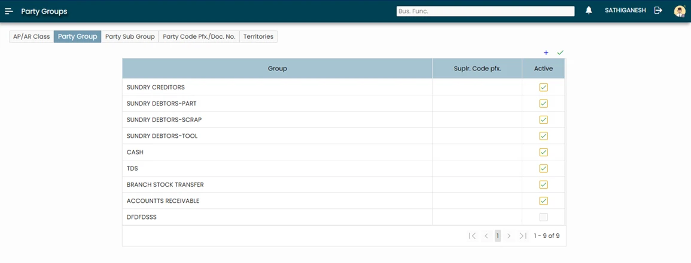
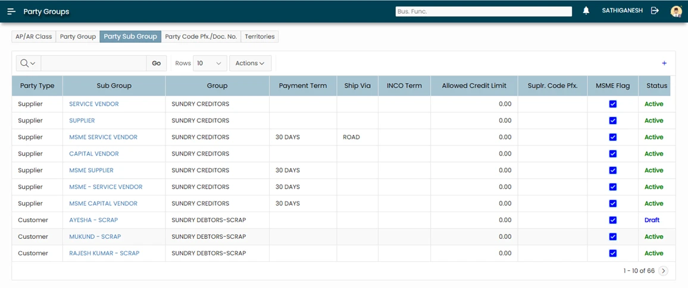
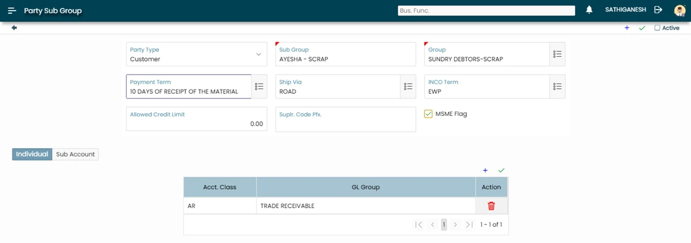
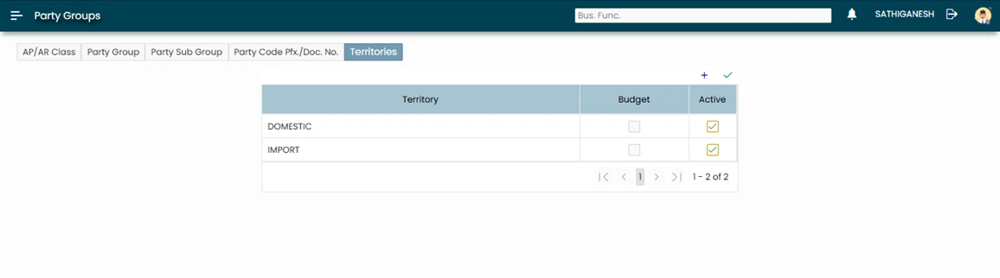

<div data-category="Financials" data-title="Business Party Groups" data-updated="December 01, 2025" data-contributors="RoadmapIT" data-breadcrumb="Home,Financials,Business Party Groups">
  <div class="page-content">
    <p>The supplier group and sub-group are called us business party group are that are created using this screen.</p>
    <h5>Navigation path:</h5>
    <p class="fs-6">Setup \Business Party Groups</p>
    <h2>Party Group</h2>
    
    <ul style="list-style-type: none; align-content: center">
      <li class="mouse-icon">
        Click
        <i class="bi bi-plus fs-4 mx-2 text-primary"></i>
        to create a new Party group.
      </li>
      <li class="mouse-icon">Enter the Group Description.</li>
      <li class="mouse-icon">Check the active checkbox to use these groups</li>
      <li class="mouse-icon">
        Click
        <i class="bi bi-check-lg fs-4 mx-2 text-success"></i>
        to save the group.
      </li>
    </ul>
    <h2>Party Sub Group</h2>
    <p>Supplier Subgroup can be created in this screen and the Subgroup can be linked with the Group.</p>
    
    <ul style="list-style-type: none; align-content: center">
      <li class="mouse-icon">
        Click
        <i class="bi bi-plus fs-4 mx-2 text-primary"></i>
        to create a new Party Subgroup.
      </li>
    </ul>
    
    <ul style="list-style-type: none; align-content: center">
      <li class="mouse-icon">Enter the Sub Group Description.</li>
      <li class="mouse-icon">Select the Group from LOV.</li>
      <li class="mouse-icon">Select the Payment Terms from LOV.</li>
      <li class="mouse-icon">Select the Ship Via</li>
      <li class="mouse-icon">Select the INCO Term from LOV.</li>
      <li class="mouse-icon">Enter the Allowed credit limit, if required.</li>
      <li class="mouse-icon">Enter the GL Group for this sub group.</li>
      <li class="mouse-icon">
        Click
        <i class="bi bi-check-lg fs-4 mx-2 text-success"></i>
        to save the entry.
      </li>
      <li class="mouse-icon">Check Activate button to activate the party group.</li>
    </ul>
    <h2>Territories</h2>
    <p>This screen is used to create the territories.</p>
    
    <ul style="list-style-type: none; align-content: center">
      <li class="mouse-icon">
        Click
        <i class="bi bi-plus fs-4 mx-2 text-primary"></i>
        to create a new Territory
      </li>
      <li class="mouse-icon">Enter the Territory Description.</li>
      <li class="mouse-icon">Select the Active checkbox to use the Territory.</li>
      <li class="mouse-icon">
        Click
        <i class="bi bi-check-lg fs-4 mx-2 text-success"></i>
        to save the entry.
      </li>
    </ul>
  </div>
</div>
